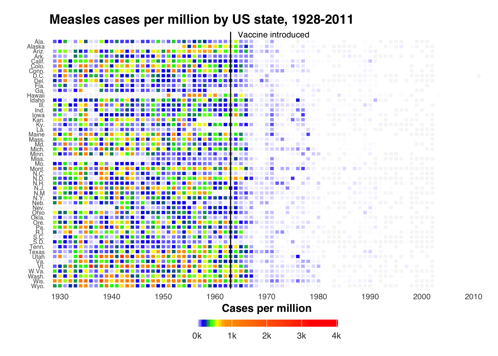

Related chart types

Scatter

Heatmap

Correlogram

Bubble

Connected scatter

Density 2d
This chart visualizes measles cases across US states between 1928-2011 using a temporal heatmap. It highlights the impact of the 1963 measles vaccine introduction, demonstrating through historical public health data how vaccination successfully reduced disease incidence across the United States.
The visualization is based on historical public health records and clearly demonstrates the effectiveness of vaccination programs, providing insights into one of the most successful public health interventions in US history.
This chart was adapted from Ben Moore’s post. Thanks to him for sharing this insightful chart!
This visualization only requires two R packages: dplyr
for data preparation, and ggplot2 for creating the
heatmap.
This code reads a CSV file containing measles cases per million
inhabitants per year and US state. First, it imports the data using
readr::read_csv(). See how the data is structured from the
print() output. Then, it creates a new dataset “mdf” where
states are converted to factors and arranged in
reverse alphabetical order - this ordering will determine how
states are displayed from top to bottom in our final heatmap.
# Read the data
measles = readr::read_csv("measles_data_1928-2011.csv")
# Show the first few rows of the data
print(head(measles))## # A tibble: 6 × 3
## Year State value
## <dbl> <chr> <dbl>
## 1 1928 Alaska NA
## 2 1928 Ala. 335.
## 3 1928 Ark. 482.
## 4 1928 Ariz. 201.
## 5 1928 Calif. 69.2
## 6 1928 Colo. 207.This code creates a custom color gradient for the
heatmap that will represent different levels of measles cases. It
combines two color palettes: a spectrum from white through blue, green,
yellow, and orange (for lower case counts up to 500), followed by an
orange-to-red gradient (for higher case counts from 500-4000). The
colorRampPalette() function smoothly interpolates between
these colors to create 100 total color steps.
This code generates a comprehensive temporal heatmap
visualization in R using ggplot2 to display
measles cases across US states from 1928 to 2011. It also highlights the
year of vaccine introduction.
ggplot2 with states on y-axis,
years on x-axis, and case numbers determining colorgeom_tile() to create the rectangular cells with
white borderstheme_minimal() with customized elementsggplot(mdf, aes(x = Year, y = State, fill = value)) +
geom_tile(colour = "white", linewidth = 0.5,
width = .9, height = .9) +
theme_minimal() +
scale_fill_gradientn(colours = cols,
limits = c(0, 4000),
breaks = seq(0, 4000, by = 1000),
labels = c("0k", "1k", "2k", "3k", "4k"),
na.value = rgb(246/255, 246/255, 246/255),
guide = guide_colourbar(ticks = TRUE,
nbin = 50,
barheight = .5,
label = TRUE,
barwidth = 10,
title = "Cases per million",
title.position = "top",
title.hjust = 0.5)) +
scale_x_continuous(expand = c(0,0),
breaks = seq(1930, 2010, by = 10),
limits = c(1928, 2012)) +
geom_vline(xintercept = 1963, color = "black", size = 0.5) +
theme(legend.position = c(.5, -.13),
legend.direction = "horizontal",
legend.text = element_text(colour = "grey20"),
plot.margin = grid::unit(c(.5,.5,1.5,.5), "cm"),
axis.text.y = element_text(size = 6, family = "Helvetica",
hjust = 1),
axis.text.x = element_text(size = 8),
axis.ticks.y = element_blank(),
panel.grid = element_blank(),
title = element_text(hjust = -.07, face = "bold", vjust = 1,
family = "Helvetica"),
text = element_text(family = "Helvetica")) +
ggtitle("Measles cases per million by US state, 1928-2011") +
annotate("text", label = "Vaccine introduced", x = 1963, y = 53,
vjust = 0.9, hjust = -0.1, size = I(3), family = "Helvetica") +
xlab("") + ylab("")
Related chart types
👋 After crafting hundreds of R charts over 12 years, I've distilled my top 10 tips and tricks. Receive them via email! One insight per day for the next 10 days! 🔥